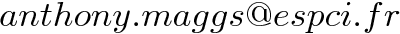
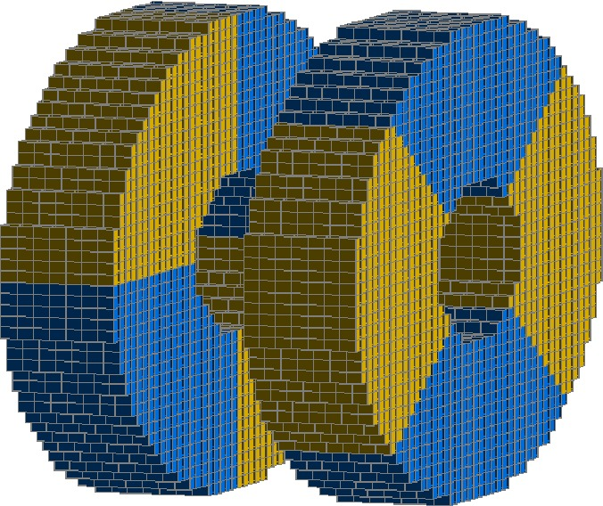
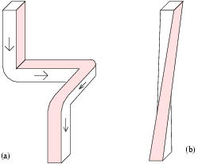
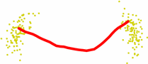
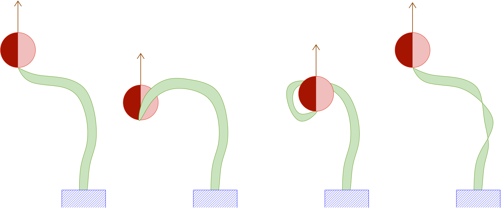
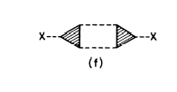
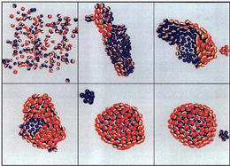

- Mail: A.C. Maggs, PCT, ESPCI, 10 Rue Vauquelin, 75005,Paris,France.
- E-mail: 
-
Colloidal fluctuations
Mode structure from truncated correlations
- Truncated correlations in video microscopy of colloidal solids
- Anisotropic elasticity and confocal microscopy
- Elastic constants from confocal microscopy with Claire Lemarchand, Michael Schindler
- Fluctuations and modes in a
colloidal crystal with Daniel Bonn, Antina Ghosh,

Density of states in two cuts of a colloidal crystal.
Casimir, Lifshitz and dielectric fluctuations
How to calculate van der Waals interaction in arbitrary geometries going beyond the pair approximation, finding the fully summed Lifshitz free energy - Application to Monte Carlo in fluids with Helene Berthoumieux Showing how to go beyond approximations such as Axelrod-Teller.
- Lifshitz in two and three dimensions
- Evaluation of dispersion forces in general geometries with Samuela Pasquali
- Thermal Casimir/Lifshitz interactions- discretization methods
- Generation of thermal Casimir in Monte Carlo
- The transliteration of Лифшиц can also be Lifschitz or Lifshits
-

Two disks for which the full electrodynamic interaction is found by evaluating a functional determinant $$F=\int_0^\infty \log ( {\det{[{\mathcal D} (\omega)])}}\frac{ d\omega}{2\pi}$$
Quantum spins and Computing
Quantum annealing appears to give a simple means of finding the solution to difficult problems, however a first order phase transition can lead to exponential slow-downs - Quantum annealing with Florent Krzakala and Jorge Kurchan
- Quantum optimization
- Quantum energy gaps with Justine Pujos
- Multi-scale Monte Carlo for Lennard-Jones fluids
-
Local electrostatics in molecular dynamics and Monte Carlo
We can use the constraint of Gauss' law: \( \; div\;{\bf E} - \rho =0 \) to produce, local \(O(N)\) Monte Carlo algorithms for the simulation of charged systems - Convex functional for Poisson-Boltzmann theory of ionic solutions—using Legendre transforms to produce dual variational principles
- Legendre transforms in electostatics with Justine Pujos
- Summary of Local electrostatics
- Metallic and 2+1 dimensional boundary conditions with Lucas Levrel
- Simulating nanoscale dielectric response with Ralf Everaers
- Discretization artefacts, higher order corrections in electrostatic interpolation
- Mobility and trail dynamics
- Comparison of molecular dynamics and Monte Carlo for CCP2004
- Cluster algorithms for Statphys22 with Fabien Alet
- Molecular dynamics, with Joerg Rottler
- Off-lattice Monte Carlo, with Joerg Rottler
- Auxiliary field Monte Carlo for charged particles, inhomogeneous media and Poisson-Boltzmann
- An algorithm for local Coulomb simulation, for a simple lattice gas with Vincent Rossetto
- Relaxation dynamics of a local Coulomb
- Ewald summation unpublished notes on simple optimizations for Monte Carlo
-

-
-
Polarized multiple scattering
The theory of polarization in multiple scattering is very similar to the theory of writhe in semiflexible polymers, such as DNA: - Writhing Light in multiple scattering
- Polarization patterns in back scattering
- Berry Phases and multiple scattering
-

Flower-like figure from observation of polarized light in strongly scattering sample. Four-fold symmetry from the Berry phase of \(4 \pi\) in backscattering geometry.
-
-
Writhe geometry
Formulations of the writhe based on the local torsion, \(\tau\) can not be used in polymer physics, one must use more global considerations to understand the geometry - Writhing geometry of open DNA
- Comment on DNA elasticity
- Geometry of writhe
-

-
-
Semiflexible polymers
Anisotropic dynamics in semiflexible polymers leads to a mixture of transverse dynamics in \( t^{3/4} \) and longitudinal dynamics in \( t^{7/8} \). - Anisotropic fluctuations
- Two plateau moduli for actin gels
- Sub-diffusion and anomalous
- Non-affine effects in micro-rheology
Actin filaments have a persistence length of \(10\mu\), this is much stiffer than most polymers. How does this affect the rheology and mechanics of semi-diluate solutions? The modulus is given by \(G= \frac{kT}{\ell_e}\) where the collision length in the tube \(\ell_e\) is close to a micron. Uncrosslinked actin is thus rather soft.- Dynamics and rheology of actin solutions Hervé Isambert

Microtubule motor constructs
- Concentration of motors in microtubule arrays with Francois Nedelec
- Regulation of microtubule growth Marileen Dogterom
- Organization of microtubules by motors Thomas Surrey

Use of integral equations such as \[ \int_V \frac{1}{4\pi|{\bf r}-{\bf r'}|} \psi({\bf r}) \; d^3{\bf r} = \Lambda \psi({\bf r'}) \] to understand experimental mode structure in a fluctuating elastic medium

Anomalous dispersion in sliced colloids
Why does a colloid have the anomalous dispersion law \( \omega^2 =q \) when observed in a confocal slice? The density of states then behaves as \(\rho(\omega) \sim \omega^3\)

Evolution of the gap in a quantum system as a function of coupling for various systems sizes
Multi-scale Monte Carlo algorithm for Lennard-Jones fluids
Introduce a collective update in a fluid which moves many particles simultaneously. It leads to simultaneous equilibration on all length scales, but requires the determinant of the transformation as a correction in the Metropolis update rule.A bent beam with writhe leads to rotation.

Writhe is only defined modulo \( 4 \pi \) in open geometries
-
-
Long range interactions in metallic systems
In a classical plasma one normally expects that correlations are short ranged -- due to Debye screening. In quantum mechanics the situation is more complicated we show here how long-ranged interaction are generated in an electron plasma in a way that is reminiscent of van der Waals interaction in \(1/r^6 \) -

- Absence of screening in the quantum Coulomb system with Neil Ashcroft
-
-
Simulations of self assembling fluid membranes
Can one build a model of locally interacting particles which self assemble into a fluctuating fluid membre? - Fluid membranes
